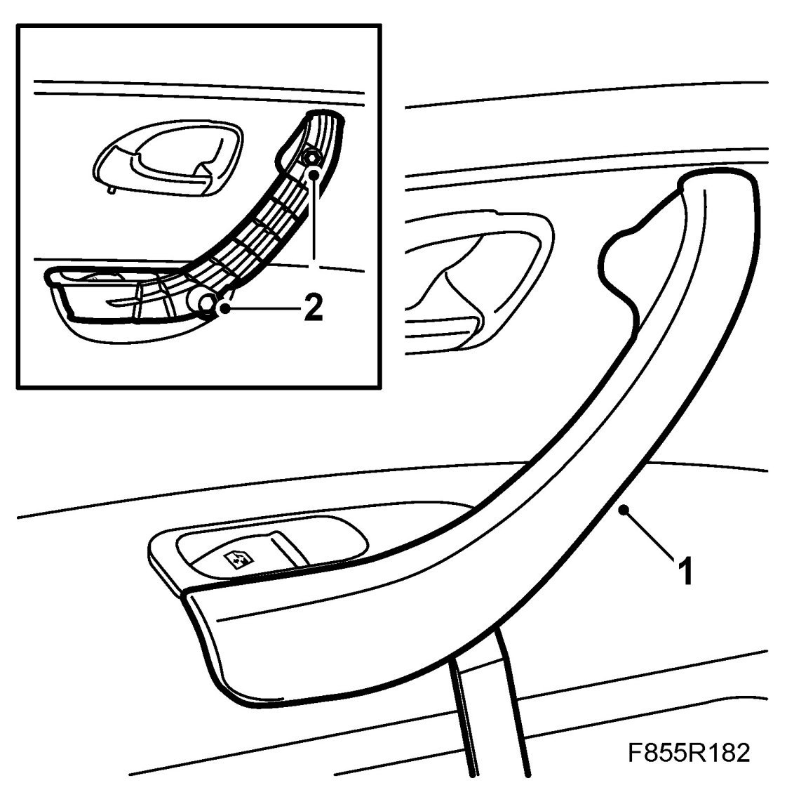
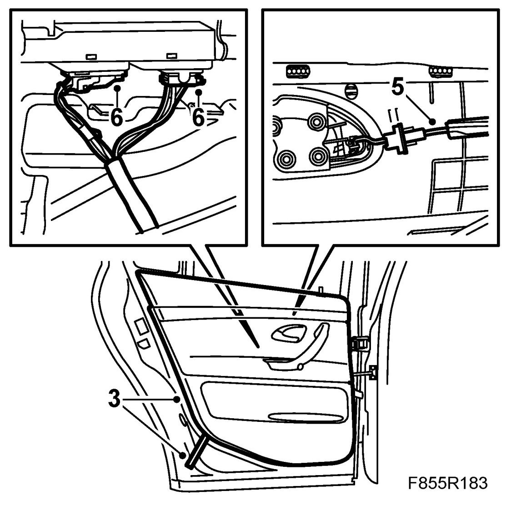
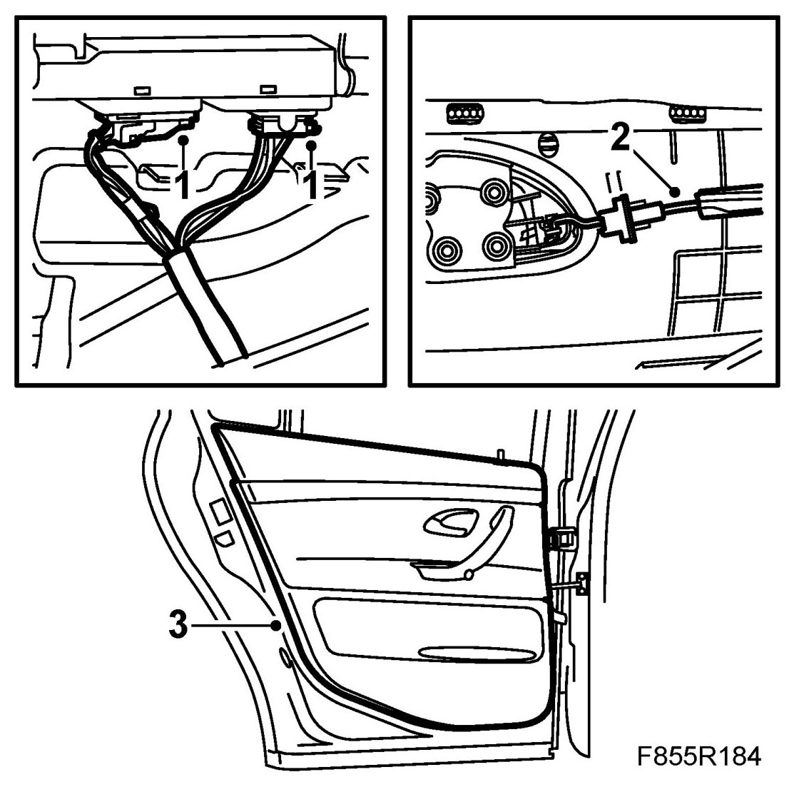
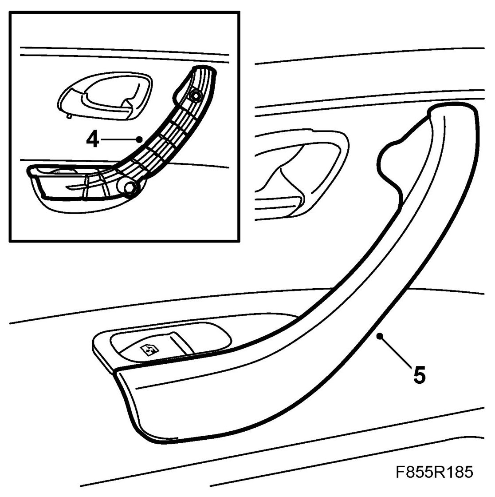

Door Trim, Rear
Door Trim, Rear
To remove
1. Remove the door handle cover. Use 82 93 474 Removal tool under the cover and lift upwards.

2. Remove the screws from the handle.
3. Undo the door trim clips by inserting 82 93 474 Removal tool between the trim and door panel and gently prising out the trim. Move the tool along the trim as the clips come undone.

4. Raise the door trim so that it comes free of the top edge.
5. Remove the door handle wire.
6. Unplug the window lift connector.
To fit
1. Plug in the window lift connector.

2. Fit the door handle wire.
3. Push the upper section of the door trim down between the window and the door panel. Ensure that the clips are aligned with their respective holes and push the trim firmly into position.
4. Fit the door handle screws.

5. Fit the cover to the inner door handle.
6. Cars with pinch protection: Carry out pinch protection programming.